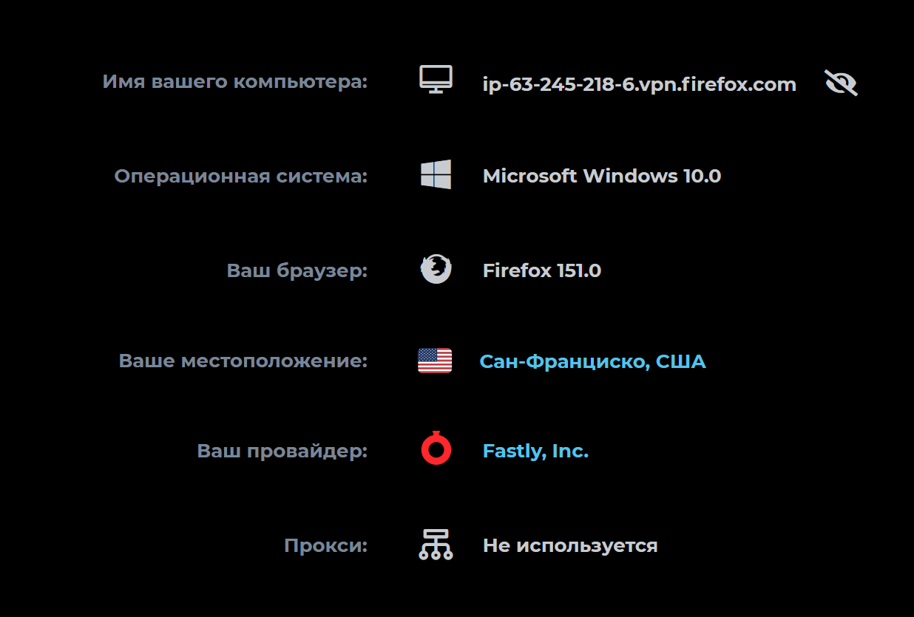

В Firefox 150 появился встроенный VPN.
Однако, его использование ограничено страной пребывания. В коде целый перечень территорий типа Кубы, России, Ирана, Северной Кореи и прочих подсанкционных мест. Если этот чёрный список не убрали, то VPN на этих территориях работать и не будет (штаб-квартира Mozilla находится в США, так что, хочешь не хочешь, им приходится).
Кроме того, Firefox VPN пока вообще развернут лишь в ограниченном числе стран:
Firefox users in the: U.S., U.K., France, Germany, and Canada
Однако, на ресурсе ntc.party уже несколько месяцев назад кто-то написал приложение, которое позволяет пользоваться этим VPN независимо от страны пребывания.
----- 8< -----
А там точно есть геоблок?
Официально были заявлены ограничения. Я не стал проверять насколько строго они соблюдаются. Но получается, что всё довольно либерально пока.
“autostart”:false
можно попробовать поменять
Да. Теперь подключается автоматом.
В about:config по запросу ipprotect нашёл ещё настройку browser.ipProtection.egressLocationEnabled. Но по моему, она только показывает США (у меня ещё warp в системе).
На выход я привязан к Франции.
А вход anycast. У входного endpoint 5 стран.
Оу, потыкал ipProtection настройки (А конкретно browser.ipProtection.enabled), потом добавил на панель инструментов VPN и всё завелось

Спасибо за подсказку! Сработало. Но у меня не пишет кол-во оставшихся ГБ
----- 8< -----
Еще есть bat-скрипт:
@echo off
chcp 65001 > nul
echo Запускать с правами текушего пользователя (не администратора).
echo Скрипт принудительно завершит процесс Firefox и включит функцию vpn.
pause
taskkill /f /im firefox.exe >nul 2>&1
set "P=%APPDATA%\Mozilla\Firefox\Profiles"
for /d %%D in ("%P%\*") do (
if exist "%%D\prefs.js" (
findstr /i "browser.ipProtection.enabled" "%%D\user.js" >nul || echo user_pref^("browser.ipProtection.enabled"^, true^);>> "%%D\user.js"
)
)
set "F=%ProgramFiles%\Mozilla Firefox\firefox.exe"
if exist "%F%" start "" "%F%"
Grok помог написать батник для включения vpn.
Он добавляет строку user_pref(“browser.ipProtection.enabled”, true); в user.js
Для первого запуска, видимо, нужен зарубежный ipv4/ipv6, у меня ipv6 есть (Cloudflare WARP, DME), с ним заработало.
----- 8< -----
Еще... Вот продвинутый вариант. Раздает обычный SOCKS5, ходит на Fastly по HTTP/2, поэтому не плодит TCP-соединения, все мультиплексируется в одно. Автоматически обновляет токен каждые ~8 минут. firefox-vpn-client.tar.gz (60 КБ).
Файл прикреплен к записи.